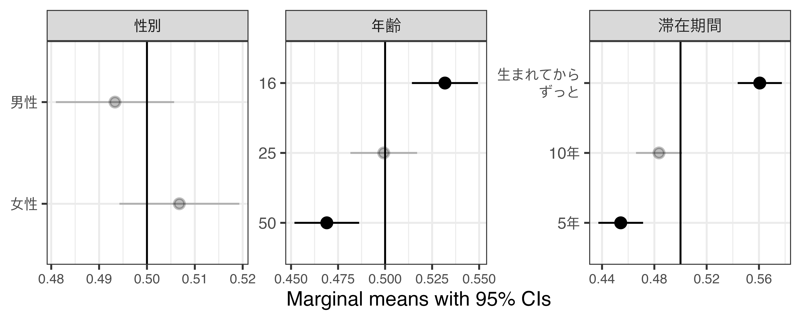
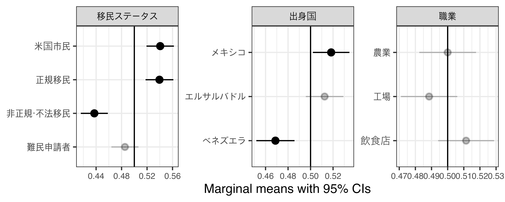
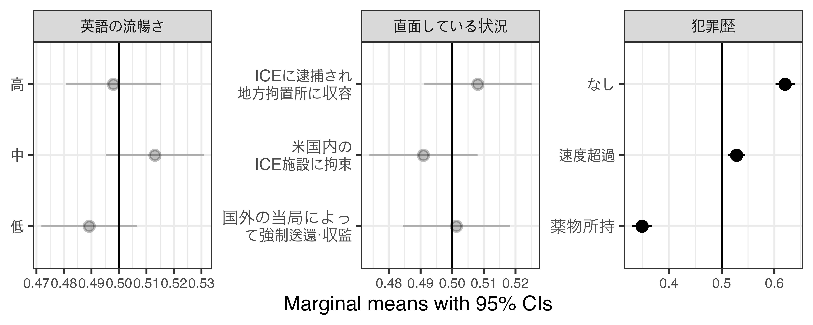
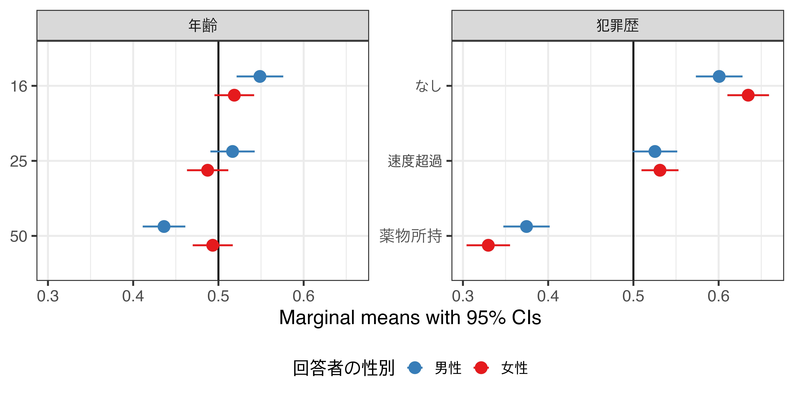
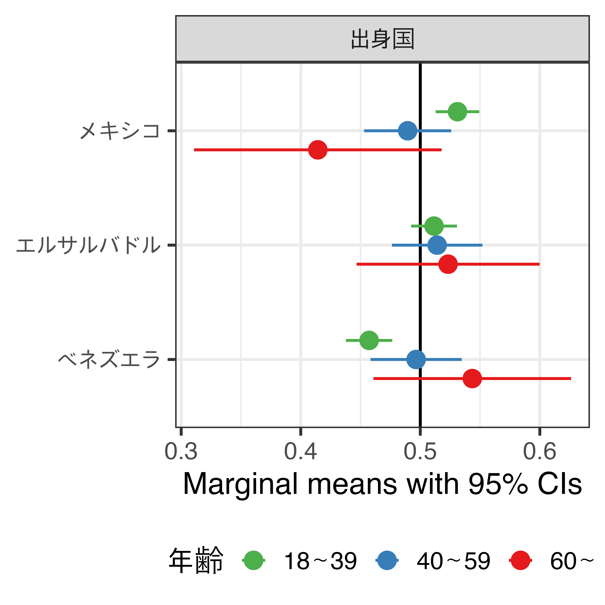
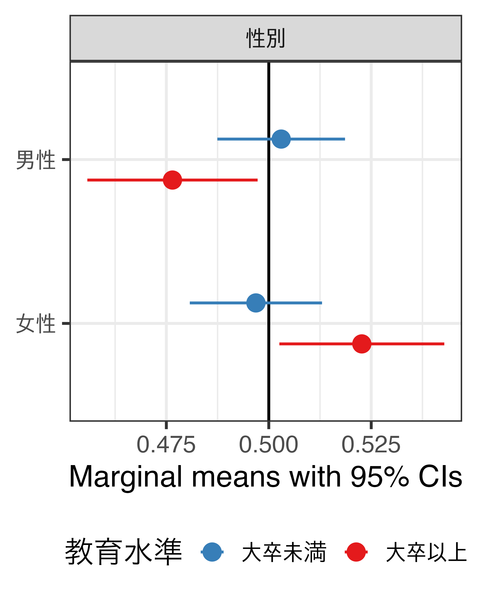

Latino Attitudes toward New Immigrants and Shifting Political Alignments
A Conjoint Experiment in Chicago
移民をめぐるパラドックス
-
移民のもたらす政治的帰結
- 欧州、米国、および世界全体における反移民感情の世界的な高まり
- 右派ポピュリスト政党への支持の同時多発的な急増
-
先行研究の限界：「自国生まれ（native-born）」という視点
- 「自国生まれ」と人種的マジョリティ（ここではヒスパニック以外の白人層）を同一視
- 人種的・エスニック的マイノリティ集団に属する自国生まれの市民の視点は、依然として看過
-
米国内ラティンクス（Latinx; ラティーノ + ラティーナ）への注目
- 米国人口の約2割を占め、その79%が米国市民権を保有（Pew Research Center 2025）
-
\(\Rightarrow\) 移民をルーツに持つ国内のマイノリティ集団が、新規の移民をどのように捉えているのか
リサーチ・クエスチョン
-
近年の移民増加に対する認識：
長期定住している移民ルーツの住民1は、近年の移民増加をどのように捉えているか
-
政治的再編への含意：
このような認識は、ラテン系有権者の間で観察されている共和党支持へのシフトをどの程度突き動かしているか
移民に対するラティンクスの態度：伝統的な視点
「Linked Fate（運命共有体?）」を通じた連帯（Dawson 1994）
- 周縁化や差別の歴史を共有することから生じる集団アイデンティティの一側面(Vargas et al. 2017)
- 反移民的なレトリックが、ラテン系コミュニティ全体に対する包括的な脅威として認識
-
\(\Rightarrow\) 集団の結束を強化し、政治的動員を促進（Wallace and Zepeda-Millán 2020）
移民に対するラティンクスの態度：新たな視点
-
ラティンクスにおけるの反移民感情
- 「良い移民」と「悪い移民」を区別する象徴的な境界（symbolic boundary）設定（Begum 2025）
- 定住ラティンクスは、自らの社会的地位を守るために新規の流入者から距離を置く（Abrajano and Hajnal 2015）
-
ラティンクス移民への恨み・怒り（Latinx Immigration Resentment; LIR）（Hickel et al. 2024）
- 定住ラティンクスは、移民に付きまとう「犯罪」や「低学歴」といったネガティブなステレオタイプと同一視されるのを避けるため、認知的に新規移民から距離を置こうとする
-
\(\Rightarrow\) 制限的な移民政策や排外主義的な政党・候補者への支持へ
理論と仮説（1）
経済的・財政的脅威（Alesina, Miano, and Stantcheva 2023; Hainmueller and Hiscox 2010）
- 非正規移民（不法移民）や難民申請者は、公的支出に支えられたセーフティネットに依存しているというステレオタイプを持たれがち
H1：ラテン系市民は、非正規移民や難民申請者よりも、正規移民やラテン系の米国市民に対してより同情（支持）しやすい
文化的脅威（Bromo 2025; Newman 2013; Sides and Citrin 2007）
- ラテン系市民（特に米国のラテン系コミュニティにおける文化的主流を構成するメキシコ系）は、出身国が異なる新規の流入者を、自らの集団の地位や文化的安定に対する脅威とみなす可能性
H2：ラテン系市民は、エルサルバドル系やベネズエラ系の移民よりも、メキシコ系の移民に対してより同情（支持）しやすい
理論と仮説（2）
安全保障上の脅威（Hickel et al. 2024; Rudolph 2003）
- ラテン系市民は、政治的言説においてしばしば犯罪と結び付けられる移民の増加が、ラテン系コミュニティ全体に対するネガティブなステレオタイプを強化・拡大させることを恐れる
-
\(\rightarrow\) 自らの地位を守るため、法を遵守する移民を優先し、厳格な法執行を支持することで認知的な距離置き
H3：ラテン系市民は、国外の当局によって強制送還・収監された移民よりも、米国内でICE（Immigration and Customs Enforcement; 移民・関税執行局）に拘束されている移民に対してより同情（支持）しやすい
H4：ラテン系市民は、薬物所持や速度超過などの違反で逮捕された移民よりも、犯罪歴のない移民に対してより同情（支持）しやすい
理論と仮説（3）
ラティンクスにおける態度の不均一性
- 2024年大統領選挙：「男性、若年層、大学の学位を持たない層」と「ドナルド・トランプ支持」間の強い相関関係（Garcia-Rios et al. 2025）
- 以上の人口統計学的属性を持つグループは、経済的・治安上の脅威に対して特に敏感であり、より明確な集団内部の境界設定を行う可能性
H5：以上の仮説1から仮説4で示された排他的な選好は、男性、若年層、または低学歴のラテン系市民の間でより顕著に現れる
シカゴにおけるコンジョイント実験
-
「最も可能性の低いケース（Least Likely Case）」としてのシカゴ
- シカゴの人口の約30%1を占めるラテン系住民
- 民主党の強固な地盤であり、法的ステータスに関係なく移民を歓迎してきた歴史を持つ「聖域都市（sanctuary city）」
-
2022年〜の「移民危機」： 5万人以上の移民（主にベネズエラ）が、テキサス州などから移送
- 大規模な流入 \(\rightarrow\) 市の深刻な財政負担 & 治安への懸念
-
\(\Rightarrow\) 伝統的に親移民的な都市であるシカゴでさえ排除的な感情が芽生えているのだとすれば、突然の移民急増は全米規模でLinked Fateを侵食している可能性を示唆
シカゴにおけるコンジョイント実験（続き）
-
データ
- シカゴ在住の18歳以上のラテン系米国市民（n = 818）
- 2025年7月25日〜31日にPureSpectrumを通じて実施
-
実験デザイン
- 離散選択型コンジョイント実験（Hainmueller, Hopkins, and Yamamoto 2014）
- 回答者に対し、トランプ政権の移民政策によって「困難な状況」に直面しているラテン系移民のプロファイルを、ランダム化されたペアで提示
- “Who should be prioritized for rescue?”（強制回答型）
- 同様のタスクを4回実施
- 計6,544プロファイル（= 818 \(\times\) 2 \(\times\) 4）に対する選択を測定
- 属性とそれぞれの具体的な水準は次スライド参照
実験デザイン：属性と水準
| 性別 (Gender) |
男性 / 女性 |
| 年齢 (Age) |
16歳 / 25歳 / 50歳 |
| 米国滞在期間 (Duration of Stay) |
5年 / 10年 / 生まれてからずっと |
| 移民ステータス (Immigration Status) |
正規移民 / 非正規・不法移民 / 難民申請者 / 米国市民 |
| 出身国 (Country of Origin) |
メキシコ / エルサルバドル / ベネズエラ |
| 職業 (Occupation) |
農業従事者 / 工場労働者 / 飲食店の接客係 |
| 英語の流暢さ (English Fluency) |
高 / 中 / 低 |
| 直面している状況 (Troubling Situation) |
ICEに逮捕され地方拘置所に収容 / 米国内のICE施設に拘束 / 国外の当局によって強制送還・収監 |
| 犯罪歴 (Criminal Record) |
犯罪歴なし / 薬物所持 / 速度超過 |
分析結果：全体
-
性別： n.s.
-
年齢： 若いほど（＋）
-
米国滞在期間： 滞在期間が長いほど（＋）

分析結果：全体（続き）
-
移民ステータス： 米国市民または正規移民（＋）
-
出身国： メキシコ系（＋）、ベネズエラ系（ー）
-
職業： n.s.

分析結果：全体（続き）
-
英語流暢度： n.s.
-
直面している状況： n.s.
-
犯罪歴： 犯罪歴なし > 速度違反 > 薬物所持

分析結果：サブグループ分析（性別）
-
年齢： 男性の回答者において若いほど（＋）
-
犯罪歴： 女性の回答者は男性の回答者よりも、薬物所持（ー）

分析結果：サブグループ分析（年齢）
-
出身国： 若年層の回答者は高齢層の回答者に比べ、メキシコ > ベネズエラ

分析結果：サブグループ分析（教育水準）
-
性別： n.s.（ただし、高学歴の回答者は女性を優先して救済する傾向）

まとめ
-
全体的な傾向：シカゴ内ラティンクスが有する選好
-
＋）若年層、長期滞在、正規ステータス／米国市民、およびメキシコ出身
-
ー）あらゆる犯罪歴（とりわけ薬物所持）、およびベネズエラ出身
-
\(\Rightarrow\) 経済・安全保障・文化的脅威が選好に影響（H1、H2、H4を支持）
-
サブグループ分析：右傾化層に見られる鋭い境界設定
- 2024年選挙で右傾化が顕著だった層（男性、若年層、低学歴層）において、特定の属性への忌避感や境界設定がより先鋭化
- 特に若年層は、他の世代よりもベネズエラ系移民に対して強い排他性
-
\(\Rightarrow\) 移民急増というトリガー \(\rightarrow\) 社会的負担への懸念を増幅 \(\rightarrow\) 集団内部の分断（H5を支持）
2026年中間選挙に向けた含意
-
2025年7月という時間的文脈
- 本研究のデータは、シカゴにおける移民危機の直後、地域社会の不安と行政の取り締まりがピークに達した瞬間を捉えたもの
-
定住ラテン系コミュニティが直面する新たなジレンマ
- 第2次トランプ政権による制限的な移民政策や強制送還の本格化は、新規移民への恨み・怒り（LIR）を満たす一方、定住ラティンクスの家族や近隣住民をも巻き込む脅威となる
-
政治的ダイナミズムと反動の可能性：
- 今後、過激な法執行が生活圏に及ぶことで、新規移民への忌避感を上書きする形で、伝統的なLinked Fateが再活性化する可能性
- 2024年の共和党シフトの持続か vs. 民主党への揺り戻しか
結論と今後の課題
-
集団内部の断片化（Intra-ethnic Fragmentation）の提示
- ラティンクスの態度は一枚岩ではなく、大規模かつ急速な移民流入は、連帯を侵食し、身内の中に「良い移民／悪い移民」の分断線を引く引き金へ
- リベラルで親移民的な聖域都市シカゴ（Least-likely case）でこの現象が確認されたことは、これが全米規模の潮流である可能性を強く示唆
-
政治的再編（Political Realignment）のメカニズムへの貢献
- 近年のラテン系有権者の保守化（Fraga et al. 2025; Garcia-Rios et al. 2025）の本質が、単なるトランプ人気ではなく、コミュニティ内部の認知的な距離置きである可能性
-
今後の問い
- 観察された変化は直近の移民危機に対する一時的な「反動」? それとも、米国の政党政治におけるラテン系有権者の決定的な「構造変化」の始まり?
-
\(\Rightarrow\) 継続的な観察が必要
参考文献
- Abrajano, Marisa, and Zoltan L. Hajnal. 2015. White Backlash: Immigration, Race, and American Politics. Princeton, NJ: Princeton University Press.
- Alesina, Alberto, Armando Miano, and Stefanie Stantcheva. 2023. “Immigration and Redistribution.” The Review of Economic Studies 90(1): 1–39.
- Begum, Neema. 2025. “Immigrants Against Immigration: British Ethnic Minority Brexit Voter Attitudes to Immigration.” The Journal of Race, Ethnicity, and Politics 10(1): 1–26.
- Bromo, Francesco, Lindsey P. González, Manuela Muñoz, and Kristy M. Pathakis. 2025. “Many of Us Are Not Like the Others: Country of Origin and Latino Voting Behavior in the United States.” The Journal of Race, Ethnicity, and Politics 10(1): 1–25.
- Dawson, Michael C. 1994. Behind the Mule: Race and Class in African-American Politics. Princeton: Princeton University Press.
- Fraga, Bernard L., Yamil R. Velez, and Emily A. West. 2025. “Reversion to the Mean, or Their Version of the Dream? Latino Voting in an Age of Populism.” American Political Science Review 119(1): 517–25.
- Garcia-Rios, Sergio I., Angela E. Gutierrez, Angela X. Ocampo, and Angie N. Ocampo-Roland. 2025. “The 2024 Presidential Election Through Latino Lenses: Priorities and Vote Choice.” The Forum.
- Hainmueller, Jens, and Michael J. Hiscox. 2010. “Attitudes toward Highly Skilled and Low-Skilled Immigration: Evidence from a Survey Experiment.” American Political Science Review 104(1): 61–84.
- Hainmueller, Jens, Daniel J. Hopkins, and Teppei Yamamoto. 2014. “Causal Inference in Conjoint Analysis: Understanding Multidimensional Choices via Stated Preference Experiments.” Political Analysis 22(1): 1–30.
- Hickel Jr., Flavio Rogerio, Kassra AR Oskooii, and Loren Collingwood. 2024. “Social Mobility through Immigrant Resentment: Explaining Latinx Support for Restrictive Immigration Policies and Anti-immigrant Candidates.” Public Opinion Quarterly 88(1): 51–78.
- Newman, Benjamin J. 2013. “Acculturating Contexts and Anglo Opposition to Immigration in the United States.” American Journal of Political Science 57(2): 374–90.
- Sides, John, and Jack Citrin. 2007. “European Opinion About Immigration: The Role of Identities, Interests and Information.” British Journal of Political Science 37(3): 477–504.
- Vargas, Edward D., Gabriel R. Sanchez, and Juan A. Valdez Jr. 2017. “Immigration Policies and Group Identity: How Immigrant Laws Affect Linked Fate among U.S. Latino Populations.” Journal of Race, Ethnicity, and Politics 2(1): 35–62.
- Wallace, Sophia Jordán, and Chris Zepeda-Millán. 2020. “Do Latinos Still Support Immigrant Rights Activism? Examining Latino Attitudes a Decade after the 2006 Protest Wave.” Journal of Ethnic and Migration Studies 46(4): 770–790.